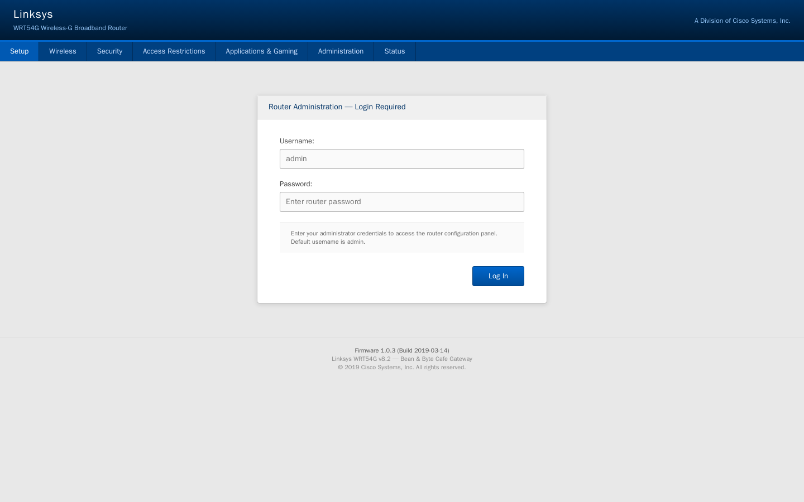
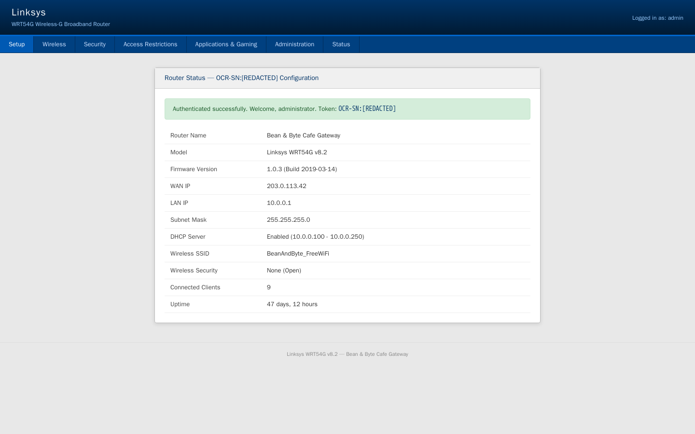
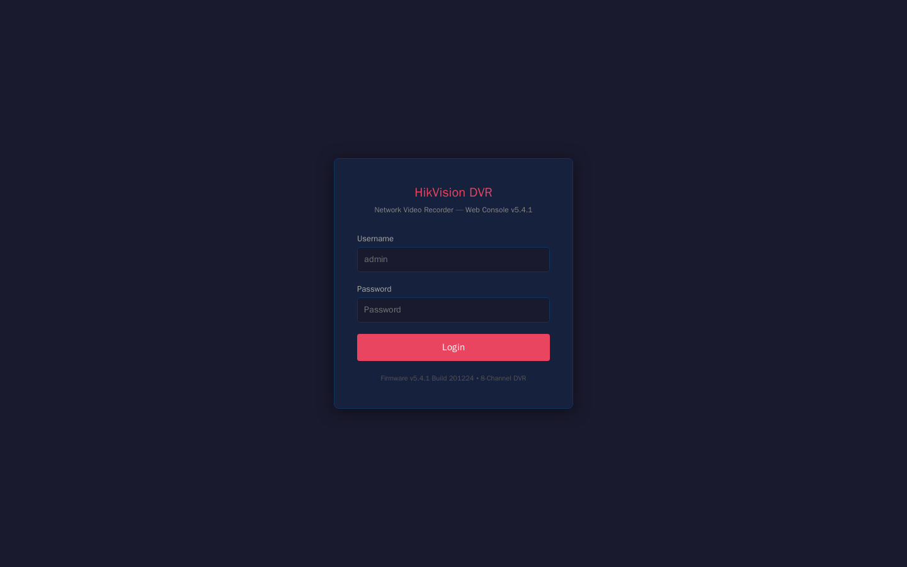
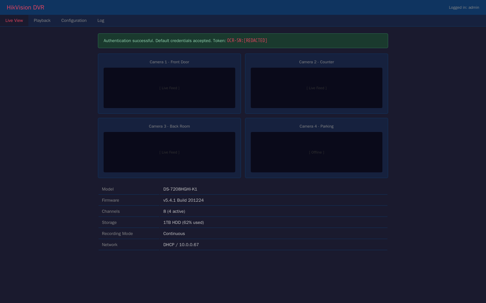
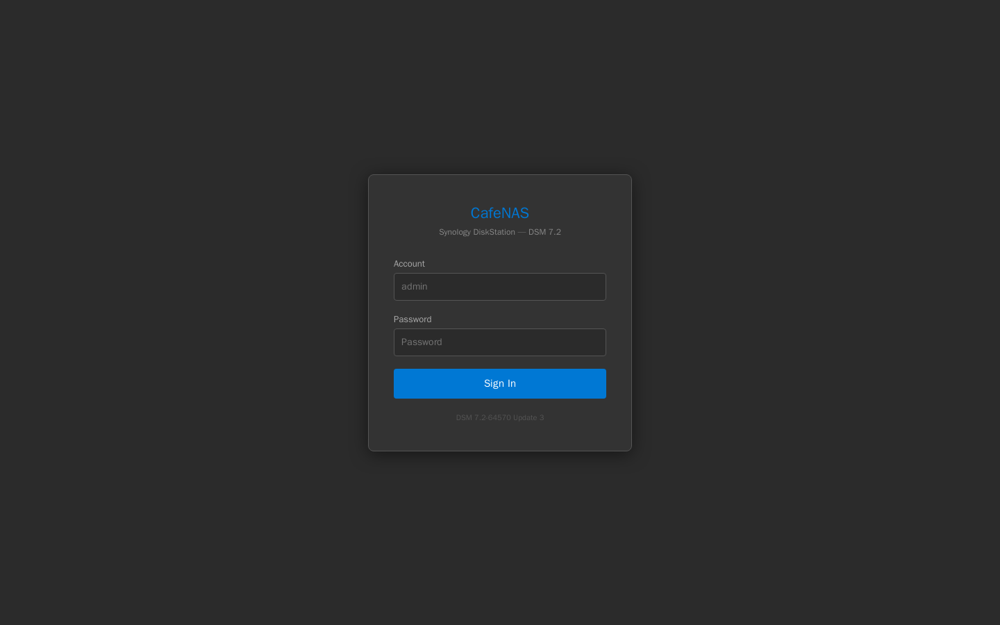
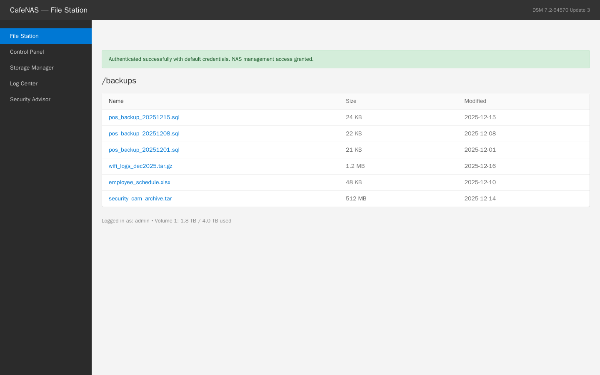

Exercise 2A: Default Everything
Engagement Status
Client: Bean & Byte Cafe Role: Security Auditor Phase: Reconnaissance Service Enumeration Exploitation Detection
What you know so far:
- You mapped 9 devices on a flat network with no segmentation
- All traffic flows in cleartext over open WiFi
- HTTP credentials, DNS queries, and mDNS announcements are visible to everyone
- Multiple devices have web-based management interfaces
Your task: Test every management interface on the cafe network for default and weak credentials. Attempt to log in to the gateway router, security camera DVR, smart thermostat, network printer, and NAS backup device.

Objective
Attempt to authenticate to 5 cafe devices using factory-default credentials. Three of these devices contain flag tokens that are revealed upon successful login. Collect all three tokens and assemble the flag. Flag tokens in service responses are prefixed with OCR-SN: to help you identify them.
Difficulty: Beginner Estimated time: 45 minutes
Background: Default Credentials Are the #1 IoT Risk
Default credentials are the single most exploited vulnerability in IoT and consumer networking equipment. The problem breaks down into three factors:
- Manufacturers ship devices with well-known username/password combinations
- Setup guides rarely emphasize changing them
- Small business owners plug devices in and never touch the settings
The result is that millions of devices are accessible with credentials that anyone can look up in a manual or online database.
How Widespread Is This Problem?
The Mirai botnet, which took down major internet services in 2016, spread by trying just 62 default credential pairs against IoT devices. That was enough to compromise hundreds of thousands of cameras, routers, and DVRs worldwide.
Common Default Credentials by Device Type
| Device Type | Common Defaults | Notes |
|---|---|---|
| Home Routers | admin/admin, admin/password | Linksys, Netgear, TP-Link |
| Security Cameras/DVRs | admin/123456, admin/admin | HikVision, Dahua |
| Smart Thermostats | root/root | Many use telnet with root access |
| Network Printers | No auth required | PJL/JetDirect protocols have no authentication |
| NAS Devices | admin/password, admin/admin | Synology, QNAP |
| IoT Hubs | admin/admin | SmartThings, Hubitat |
Attack Methodology
flowchart LR
A[Identify Device Type] -->|Manual/Database| B[Look Up Defaults]
B -->|Try Credentials| C[Attempt Login]
C -->|Success| D[Access Granted]
C -->|Failure| E[Try Next Pair]
E --> BThe process follows four steps:
- Identify the device: Use the service fingerprints from your earlier scans
- Look up default credentials: Check the manufacturer's manual or online databases
- Attempt login: Try each credential pair against the device's management interface
- Document access: Record which devices accepted default credentials
Tools You'll Need
| Tool | Purpose | Example |
|---|---|---|
curl |
Submit HTTP/HTTPS login forms | curl -X POST http://ip/login -d 'user=admin&pass=admin' |
nc (netcat) |
Connect to raw TCP services (telnet, PJL) | echo 'root' \| nc ip 23 |
smbclient |
Test SMB authentication | smbclient -L //ip -U admin%password |
All of these are available in most penetration testing distributions (Kali, Parrot, etc.).
Flag Progress
The flag has 3 parts. Collect all three from successful logins:
| Part | Device | Protocol | Credentials to Try | Token | Found? |
|---|---|---|---|---|---|
| 1 | Cafe Gateway | HTTP POST (port 80) | admin / admin | ________ |
|
| 2 | Security Camera DVR | HTTP POST (port 80) | admin / 123456 | ________ |
|
| 3 | Smart Thermostat | Telnet (port 23) | root / root | ________ |
Additional devices to verify (no flag tokens):
| Device | Protocol | Credentials | Expected Result |
|---|---|---|---|
| Network Printer | JetDirect (port 9100) | None needed | PJL response |
| NAS Backup | HTTPS POST (port 8443) | admin / password | File Station access |
Assembled flag format: OCR{________}
Solution Walkthrough
Independent Mode
Want to try this on your own? You have everything you need above: the device list, the protocols, and the credentials to try. Skip the walkthrough and come back if you get stuck. Hints are available in the platform after 5, 12, and 18 minutes.
Step 1: Gateway Router: admin/admin (Flag Part 1)
The gateway router has an HTTP login form on port 80. From your Exercise 1 scan, you know this is a Linksys WRT54G. The classic Linksys default is admin / admin.
Open it in a browser
Open http://<gateway_ip>/ in a browser to reach the router admin login. The stock Linksys WRT54G page below even spells out that the default username is admin, so the only thing standing between any customer on the open WiFi and the router config is a password the owner never changed.
Submit the credentials using curl:
Expected Output
You receive an HTML page showing the router administration dashboard. The page includes a success message and the first flag token.
Flag Part 1
The gateway accepted admin/admin. The response HTML contains a token: look for a value prefixed with OCR-SN: in the page body. The token is the part after the prefix. Write it down as Part 1.
See it in a browser
In a browser, type admin / admin into the same login form and the router drops you onto the status dashboard below. The token sits in the green success banner at the top of the page. The screenshot masks the token so you collect the live value from your own session.

Security Impact
With admin access to the gateway, an attacker could:
- Change DNS settings to redirect all traffic through a malicious server
- Disable the firewall
- Set up port forwarding to access internal devices from the internet
- Monitor all network traffic passing through the router
Step 2: Security Camera DVR: admin/123456 (Flag Part 2)
The DVR is running a HikVision web interface on port 80. HikVision is one of the most commonly deployed camera brands, and their default password is notoriously well-known.

Open it in a browser
Open http://<dvr_ip>/ in a browser to reach the HikVision web console login shown above. The DVR serves its console on plain HTTP port 80, so the login form loads for anyone on the cafe network.
Expected Output
You receive the DVR's live view page showing camera feeds and system information, along with the second flag token.
Flag Part 2
The DVR accepted admin/123456. The response HTML contains a token: look for a value prefixed with OCR-SN: on the live view page. The token is the part after the prefix. Write it down as Part 2.
See it in a browser
Enter admin / 123456 in the DVR login form and the console loads the live view below: four camera channels and a success banner carrying the token. The screenshot masks the token so you read the live value from your own login.

Security Impact
With access to the DVR, an attacker could:
- Watch live camera feeds of the cafe
- Download recorded footage
- Disable cameras before a physical break-in
- Use the DVR as a pivot point for further network attacks
Step 3: Smart Thermostat: root/root via Telnet (Flag Part 3)
The thermostat exposes two faces. A read-only web dashboard answers on HTTP port 80, and the flag itself lives behind a telnet service on port 23 that you drive from a terminal session. IoT devices with telnet access often use root/root as the default credentials, giving full system access.
Open it in a browser
Open http://<thermostat_ip>/ in a browser to reach the CafeTherm IoT dashboard below, then follow the Network Diagnostics link to http://<thermostat_ip>/diagnostics/. The diagnostics page confirms which services are live (HTTP, telnet on port 23, and SNMP on UDP 161) and even prints the SNMP community string. The web UI is reconnaissance only: the flag token sits in /etc/token.txt, which you reach over telnet, not the browser.


Connect using netcat and provide the credentials:
Or connect interactively:
Then type root for the username, root for the password, and run cat /etc/token.txt to read the token.
Expected Output
Flag Part 3
The thermostat accepted root/root. The contents of /etc/token.txt contains your token prefixed with OCR-SN:. The token is the part after the prefix. Write it down as Part 3.
Security Impact
With root access to the thermostat, an attacker could:
- Change HVAC settings (set heat to maximum, disable cooling)
- Use the device as a network pivot point
- Install persistent malware on the device
- Access the device's network configuration and credentials for other systems
Step 4: Network Printer: No Authentication Required
The printer exposes its JetDirect protocol on port 9100 with no authentication at all. Anyone on the network can query it:
The printer responds to any PJL command without requiring credentials. The lack of authentication means anyone on the network can:
- Print arbitrary documents
- Query printer configuration and serial numbers
- In some cases, access stored print jobs
Step 5: NAS Backup: admin/password
The NAS runs an HTTPS management interface on port 8443. Synology devices default to admin / password (or blank password on older firmware).

Open it in a browser
Open https://<nas_ip>:8443/ in a browser to reach the Synology DSM login above. The browser will warn about the self-signed certificate, the same reason curl needs -k. Accept the warning to continue to the login form.
The -s flag suppresses the progress meter and the -k flag skips certificate validation (self-signed cert).
Expected Output
You receive the NAS File Station page showing backup files including POS database dumps, WiFi logs, and security camera archives.
See it in a browser
Enter admin / password in the DSM login form and the File Station opens straight to the /backups volume below: three POS database dumps, the December WiFi logs, the employee schedule, and a half-gigabyte camera archive, all browsable by anyone on the guest WiFi.

Security Impact
With NAS access, an attacker could:
- Download POS database backups containing customer payment data
- Access WiFi logs showing client connection history
- Delete or encrypt backups (ransomware)
- Upload malicious files that may be executed by other systems
Step 6: Assemble and Submit the Flag
Combine the three tokens you collected:
Submit this as your flag in the platform.
Common Mistakes
Wrong port for the NAS
The NAS management interface runs on port 8443, not 443 or 80. Use https:// and specify the port.
Forgetting -k for HTTPS
The NAS uses a self-signed certificate. curl will refuse to connect unless you pass -k to skip certificate validation.
Telnet credentials not working
Make sure you are sending root as both the username and password. Some tools send extra whitespace or newline characters. If echo -e does not work, try connecting interactively with nc.
Missing the token file
On the thermostat, the token is in /etc/token.txt. You need to run cat /etc/token.txt after logging in: the token is not displayed in the welcome message.
Flag format
The flag is OCR{________} with underscores separating the tokens. Do not add spaces or change the case.
Key Takeaways
What You Learned
-
Default credentials are everywhere. Every single device in the cafe accepted factory-default passwords. Factory defaults being accepted everywhere is the norm in small businesses and home networks.
-
Different protocols, same problem. Whether it is HTTP, telnet, or SMB, the underlying issue is the same: predictable credentials that were never changed. The protocol does not matter if the password is
admin. -
No authentication is worse than default authentication. The printer required no credentials at all. Network protocols designed before security was a concern (PJL, SNMP with
public) simply have no authentication mechanism. -
Each compromised device enables further attacks. A router gives you DNS control. A DVR gives you physical surveillance. A NAS gives you data. A thermostat gives you a persistent foothold. Together, they give an attacker complete control over the business.
-
Credential scanning is trivial to automate. Tools like Hydra, Medusa, and Ncrack can test thousands of credential pairs per minute. If a device has a default password, it will be found.
Defensive Recommendations
If you were writing this up for the cafe owner, here is what you would recommend:
| Finding | Risk | Recommendation |
|---|---|---|
| Gateway accepts admin/admin | Complete network takeover | Change to a strong, unique password; enable 2FA if supported |
| DVR accepts admin/123456 | Camera access, footage theft | Change password; restrict DVR to management VLAN |
| Thermostat has root/root telnet | Full device compromise, network pivot | Disable telnet; change root password; isolate on IoT VLAN |
| Printer has no authentication | Unauthorized printing, data leakage | Restrict printer to staff VLAN; disable unused protocols |
| NAS accepts admin/password | Data theft, ransomware target | Change password; enable 2FA; restrict to management VLAN |
| All management interfaces reachable from guest WiFi | Any customer can attempt these attacks | Implement network segmentation immediately |
What's Next
You have confirmed that every device on the cafe network accepts default or no credentials. In the next exercise, you will explore what an attacker can do with this access: extracting sensitive data, pivoting between devices, and establishing persistent access.